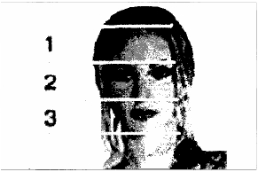

Ara ş t ı rma Serisi No.13
¯¯¯¯¯¯¯¯¯¯¯¯¯¯¯¯¯¯¯¯¯¯¯¯¯¯¯¯¯¯¯¯¯¯
40
Yüz Okuma Sanat ı
¯¯¯¯¯¯¯¯¯¯¯¯¯¯¯¯¯¯¯¯¯¯¯¯¯¯¯¯¯¯¯¯¯¯
9. BÖLÜM
YÜZ YAPISINA GÖRE TE Ş H İ S

İ nsan yüzü gerçekten kalbin aynas ı d ı r. Mimiklerin derin zenginli ğ i, kan dola ş ı m ı sürecinin gözle görülebilmesi, sinir uçlar ı n ı n yak ı n olmas ı , k ı sacas ı temel duyu organlar ı n ı n bu bölgede toplanm ı ş olmas ı , yüze bakarak vücuttaki tüm geli ş melere ili ş kin fikir söylememize olanak sa ğ lar, insan vücudundaki her türlü fiziksel ve psikolojik patolojik geli ş meler bilinçalt ı
arac ı l ı ğ ı yla yüzdeki mimiklerin de ğ i ş mesine neden oluyor.
Deneyimli doktorlar, yüz ifadesine göre insan ı n sa ğ l ı k durumu, onun ba ğ ı ş ı kl ı k sistemi potansiyeli ve nihayet, karakter yap ı s ı ve psikolojisi hakk ı nda bilgi edinebiliyorlar. Rusya'n ı n ünlü iç hastal ı klar ı uzman ı G.A. Zaharin, hastan ı n d ı ş görünü ş üne bakarak neredeyse yüzde yüz te ş his koyabiliyordu. Bir zamanlar N.I. Pirogov, hatta "Hasta insan ı n Yüzü" haritas ı n ı ç ı karm ı ş t ı .
O, her bir hastal ı ğ ı n insan yüzünde belli bir iz b ı rakt ı ğ ı n ı iddia ediyordu. Fakat, insan ı n yüz ifadesine göre te ş his koyma yöntemi Uzakdo ğ u ülkelerinde (özellikle Çin ve Kore) yayg ı n ş ekilde kullan ı lm ı ş t ı r. Tibet t ı p yöntemlerini bilen hiçbir deneyimli doktor hastan ı n yüzünü dikkatle incelemeden.te ş his koymaz. "Yüz okuma" sanat ı nda kendi sistemini geli ş tirmi ş birkaç ekol bulunuyor. Ş öyle ki Japonlar, yüzü genelde 3 bölgeye ay ı r ı yorlar:
Üst (al ı n bölgesi): Bu bölge vücudun ve ruhun genel durumunu yans ı t ı yor. Orta (ka ş lardan burnun ucuna kadar): Bu bölgeye bakarak insan ı n psikolojik durumunu görmek mümkündür.
A ş a ğ ı (üst dudaktan çenenin alt ı na kadar) Bu bölge insan ı n karakter yap ı s ı n ı yans ı t ı yor.
Deneyimli bir yüz okuma uzman ı yüz derisine, onun rengine, nemlili ğ ine, damar a ğ ı n ı n yerle ş imine, k ı r ı ş ı klar ı n yerle ş imine ve derinli ğ ine bakarak çok ş ey söyleyebilir. Bunlar ı n yan ı s ı ra, "hayat çizgileri" olarak adland ı r ı lan be ş uzvun (ka ş lar, gözler, burun, a ğ ı z ve kulaklar) durumu da dikkate al ı n ı r. Bu uzuvlar ı n orant ı l ı olmas ı (biçim, renk, temizlik vs.) iyi bir belirtidir. Bu uzuvlar ı n önemlilik derecesine dayan ı larak, baz ı alternatif t ı p te ş his yöntemleri geleneksel yöntemlerle bir arada kullan ı lmaktad ı r. Bu yöntemler aras ı nda göz irisine göre te ş his yöntemi, kulak kepçesine göre te ş his yöntemi, göz küresinin k ı lcal damar a ğ ı na göre te ş his yöntemi say ı labilir.
__________________________________________________________________
© WWW.MAXIMUMBILGI.COM